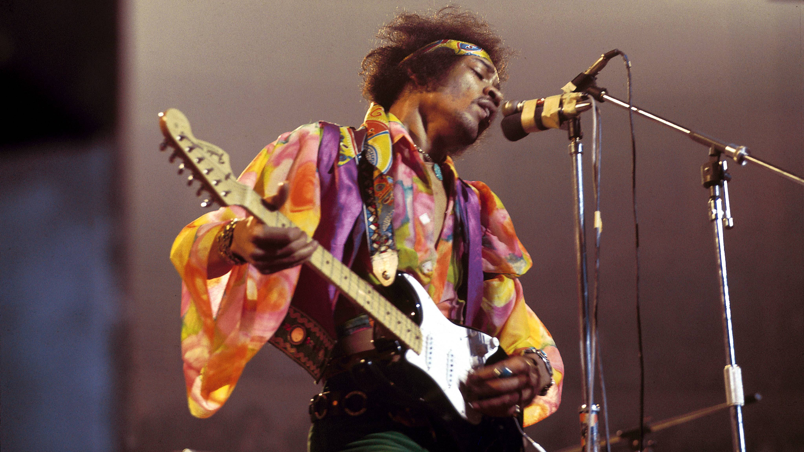
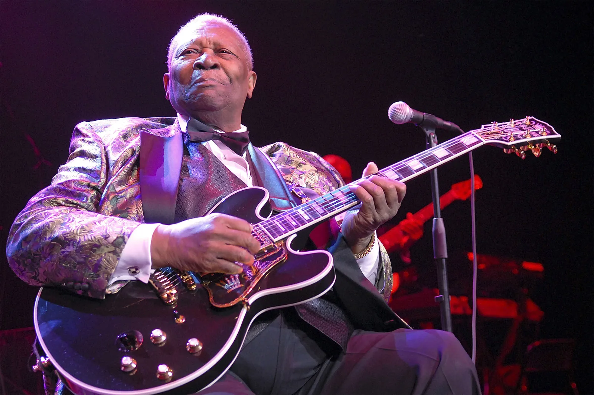
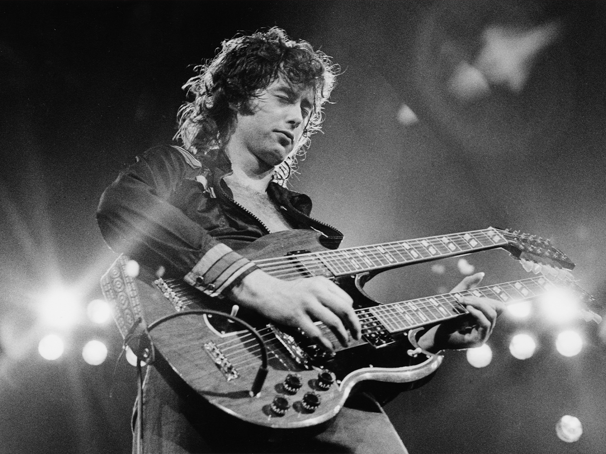
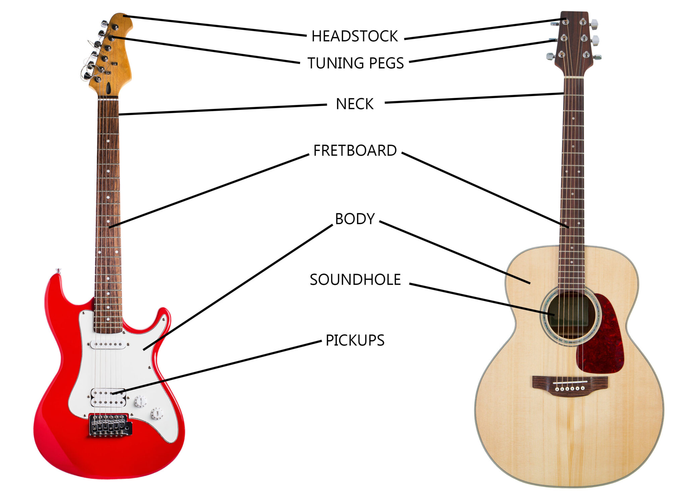

Welcome! Today you're starting an exciting journey, learning how to play the guitar. Whether you've never picked one up before or you're just brushing up on the basics, this guide will help you build confidence, understand the fundamentals, and start strumming real songs in no time. Let's tune up and dive in! You'll be playing in no time!
Guitar History
Before you dive into playing, it's worth taking a moment to appreciate the legends who helped shape the guitar into what it is today. The following musicians didn't just play the guitar, they changed the game entirely. Their styles, sounds, and creativity continue to inspire players around the world. Let's take a look at some of the most influential guitarists of all time and the lasting impact they've made.
Jimi Hendrix
Known for his groundbreaking electric guitar skills and expressive playing style, Hendrix redefined what the guitar could do. His use of feedback, distortion, and experimental techniques left a lasting mark on rock music.
B.B. King
The King of Blues brought emotion and storytelling into every note he played. His smooth vibrato and expressive solos influenced countless players across blues, rock, and jazz genres.
Eric Clapton
Clapton blended blues and rock into a soulful, technical sound. With a career spanning decades, he's inspired generations through both his solo work and legendary bands like Cream and The Yardbirds.
Jimmy Page
As the lead guitarist of Led Zeppelin, Page was known for his powerful riffs, mystical tone, and creative studio work. He helped define hard rock and heavy metal.
Getting Started
First, here are some of the things you'll need to start playing, though some of these are optional
- Guitar
- Tuner
- Pick
- Capo
- Strap
- Guitar Bag
- This may seem obvious, but choosing the right guitar matters. Beginners usually start with either an acoustic
or a basic electric guitar. Go for something comfortable, reliable, and not too expensive. Just enough to get
you going without stress.
- A tuner helps you keep your guitar sounding right. Since new strings and changes in temperature can throw off
your tuning, this little tool is essential for every practice session.
- A guitar pick makes strumming and picking much easier, especially for beginners. They're cheap and come in
different sizes and thicknesses, so try a few to find what feels best.
- A capo is a clamp that changes the key of your guitar without moving your fingers. It's super useful for playing
along with songs or simplifying chords. There are many songs that will require one of these if you want to have
the same tone.
- If you're planning to play while standing or just want extra support while sitting, a strap is a must. Make sure
it's adjustable and comfortable on your shoulder.
- A guitar bag protects your guitar from dust, scratches, and bumps, whether you're heading to lessons or just storing
it safely at home. Some even have pockets for your picks and tuner.
Next, take a moment to get familiar with the parts of your guitar. Learning the names of each part will help you follow along with lessons and take care of your instrument. Use the diagram below to better understand your guitar
Lastly, learn how to hold the guitar properly—sitting or standing—so that you're comfortable and set up for success. Once you've got your gear and you're comfortable holding your guitar, you're ready to learn your first chord. Let's do this!
The Fun Part: Learning Your First Chords
Here's a great video to teach you some basic chords
Now Have Fun!
Now that you know how to play the basic chords, you can start learning more songs with popular songs. This is an interactive game in which you can experiment with Chords with all of these popular songs. Hover over the i(where it says read me) to better understand how to play. Enjoy!